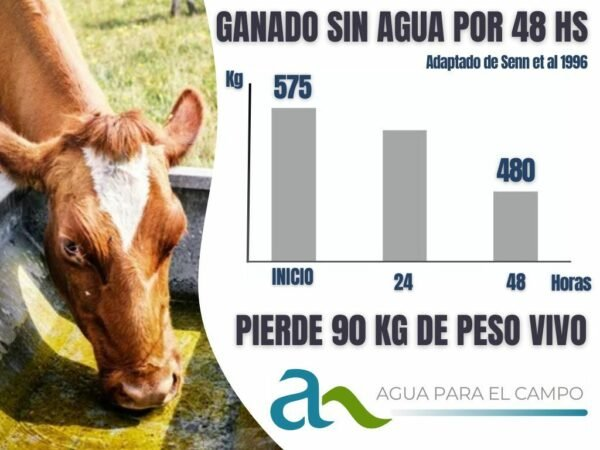
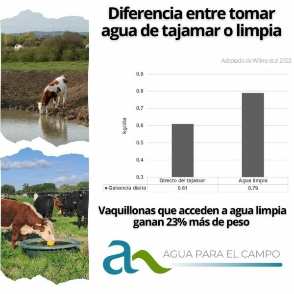
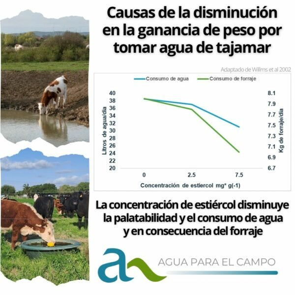
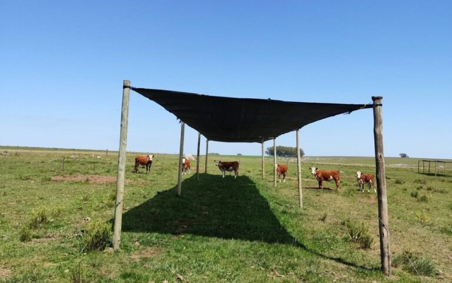

Notas Técnicas
En esta sección encontrarás notas técnicas elaboradas por nuestro director Pablo Ott, vinculadas a los efectos del consumo de agua, y su impacto en la performance animal.
1. Ganado sin agua por 48 hs

En este trabajo de Senn et al 1996, se midió lo que ocurría si se le impedía el acceso al agua durante 24 y 48 hs en un medio ambiente a temperaturas de 22° C. El resultado es muy contundente en el peso vivo del animal. Luego, si se restablece el acceso al agua, los animales se recuperan; el problema es grave si no pueden acceder. Obviamente el estudio no fue más largo porque los animales ya no se recuperarían y mueren. Faltas de agua como esa y aún con más calor son frecuentes en nuestros campos.
Cuando hay sequía, muchas veces atribuimos la pérdida de estado de los animales a la falta de pasto o comida; sin embargo, casi siempre la causa principal es la falta de suficiente agua en cantidad y calidad.
Porque, además, el animal que no toma el agua que precisa su organismo, deja de comer como también registra ese estudio.
2. Diferencia entre tomar agua de tajamar o limpia

En el esfuerzo permanente por cuantificar el efecto del suministro de agua a el ganado, siempre hago hincapié en la importancia, la cantidad, la distancia al agua, el traslado de fertilidad del campo a la aguada, y otras variables.
Rara vez destaco la importancia de la calidad del agua. No porque no sea vital, simplemente porque es difícil de caracterizar. Por eso, quiero desglosar y compartir algunos aspectos de un magnífico trabajo (Willms et al., 2002) que nos permite ponerle números a esa variable, comparando la performance de vaquillonas, vacas paridas y terneros al pie de la madre, según abreven de agua limpia en bebedero o de un tajamar, una situación tan común y aceptada en nuestro país.
El estudio se llevó a cabo durante 6 años en 4 zonas con pasturas, durante dos meses de verano en Canadá con ganado de la raza Hereford. Las vaquillonas que tomaban agua limpia ganaron un 23% más de peso respecto a las que tomaban de los tajamares. A las vacas con terneros al pie, no les afectó en el peso la calidad del agua pero sí a sus terneros que ganaron 9% menos de peso que sus pares cuyas madres tomaban agua limpia.
En la próxima publicación veremos a qué se le atribuye esa diferencia de performance.
3. Efecto de la calidad del agua en la performance del ganado

Siempre que hay sequía en el campo en Uruguay, se atribuye la caída en las ganancias o en el estado corporal del ganado a la falta de pasto.
En mi opinión, suele darse antes, por la falta de cantidad y calidad de agua disponible, condición sin la cual, los animales pierden peso más allá de la disponibilidad de pasto. En un artículo de hace unos días, un trabajo demostraba la caída de peso por falta de agua pasadas 24 y 48 hs de abstención. Eso era previsible y hasta obvio pero fue muy interesante cuantificarlo.
Asimismo, en el último artículo mencioné la diferencia generada en el estudio de Willms et al 2002, en que se constataron aumentos de ganancia de peso en vaquillonas Hereford del orden del 23% únicamente debido a una buena calidad de agua (limpia vs tajamares). Esos estudios fueron llevados a cabo en los meses de verano durante 6 años en 4 localidades de Canadá.
Dado la magnitud de esa diferencia – para una práctica tan aceptada en Uruguay como la de los tajamares – es importante también, compartir las conclusiones a las que llegaron los autores del porqué de esas diferencias de ganancias.
Para ello se analizaron varios aspectos: presencia de algas, patógenos, parásitos, toxinas, análisis químico, concentración de la presencia de deyecciones y la baja palatabilidad dada por estas últimas.
Concluyeron que la falta de palatabilidad producida por la concentración de estiércol en el agua ocasionaba la merma en el consumo de agua y consecuentemente de forraje lo que, en estos estudios, explicó la caída relativa de ganancia de peso del ganado que tomaba de los tajamares respecto a los que tomaban agua limpia.
Como reflexión propia,
Los tajamares o cauces naturales pueden ser de calidad aceptables en los meses de abundancia de lluvias. El problema se genera cuando las mismas merman y las aguadas se reducen a su mínima expresión. Particularmente en verano, cuando más calor hace y hay más requerimientos por parte del ganado, si el mismo accede a esas fuentes de agua cada vez más escasas y además pasan más tiempo adentro de ellas, aumenta enormemente la concentración de su contaminación. Justamente, en esas condiciones, en que el animal más precisa ingerir agua y más fresca, sólo tiene a disposición agua cada vez con mayor concentración de estiércol y orina además de barro y mayor temperatura.
En esas condiciones se generan las pérdidas constatadas, medidas y explicadas en estos estudios, más allá de la disponibilidad relativa de forraje.
4. Análisis sobre el gran dilema de cuánto afecta el calor y la radiación intensa al ganado de carne y en qué medida lo puede mitigar la sombra

Luego de mucha búsqueda de información seria en este tema a nivel internacional, me encuentro con un excelente trabajo nacional (de un uruguayo hecho en Uruguay) publicado en 2014. El autor (Pablo Rovira, 2014*) concluyó que el efecto de proporcionar sombra en verano a los novillos no tuvo impacto en su producción de carne.
¿Qué se hizo?
En este trabajo evaluó, para cada tratamiento, con grupos de 4 novillos de razas británica de 268 kg (+/- 4kg) el efecto de la exposición sin sombra comparado con dos niveles de sombreado (telas proporcionando 35% y 80%) mediante varios parámetros:
- Se calculó El ITH (índice temperatura- Humedad)
- Se midió la temperatura a un metro de altura del suelo con un Globe Thermometer que registra la temperatura integrando los efectos de la radiación y el viento.
- Se midió la temperatura del suelo (ésta con un termómetro infrarojo)
- Se midió la temperatura timpánica como indicador del calor del animal
- Se observó la condu
- Altura del pasto (en cm) y disponibilidad (kg MS/ha)
- Los animales se pesaron a los 0, 21,42 y 63 registrando la Ganancia diaria promedio de peso.
Resumen de las condiciones climáticas del experimento en los tratamientos
La temperatura ambiente en el período osciló entre 14,9 y 30,2 °C. La Humedad Relativa entre 35 y 100% y el ITH osciló entre 59 y 77.
Son condiciones normales de calor para la región; no las extremas del país.
Pero las diferencias en dichos parámetros fueron muy grandes cuando se comparó el tratamiento sin sombra con el de mayor sombreado (80%) e intermedia con el de 35%.
Como ejemplo, entre los horarios de 10:00 hs a las 16:00 las temperaturas a un metro de altura estuvieron entre 34 y 38°C en el control sin sombra. Dichas medidas, en cambio oscilaron entre los 28 y 30 °C en el caso del tratamiento con sombreado del 80%.
Conclusiones del autor
Ambos tipos de sombreado mejoraron las condiciones de confort de los animales al reducir las temperaturas del suelo y a un metro de altura. Por esa razón los animales los pasaban la mayor parte de las horas de calor bajo la sombra. Sin embargo, la misma no tuvo impacto en la performance de los animales en cuanto a ganancia de peso. Eso sugiere la capacidad de los mismos de aclimatarse, por ejemplo, aumentando la tasa de respiración y/o pasando más horas de la noche pastoreando evitando hacerlo en las horas de más calor y estrés calórico.
Mis reflexiones
Ningún trabajo solo permite conclusiones muy enfáticas, pero, cuando está bien formulado, es un gran aporte y contribución. Este trabajo lo es. Y lo considero así porque, a diferencia de la mayoría de los trabajos en este tema que evalúan la respuesta a la sombra sin especificar la forma de acceso al agua en los distintos tratamientos, en este caso se especifica que, en todos los tratamientos, el agua estaba a 100 m de la sombra. Es decir, nunca fue limitante su acceso para los animales con o sin sombra.
Ya tendremos la oportunidad de analizar un trabajo de Canadá, donde sí encontraron diferencias en la ganancia animal por efecto del sombreado. Por lo tanto, nada de esto es concluyente. Sólo podemos concluir, que no necesariamente el sol y las temperaturas intensas de nuestros veranos afectan la performance productiva del ganado vacuno, incluso de razas británicas.
Ing. Agr. MSc. Pablo Ott
¿Querés mejorar la calidad de tu agua?
Solicitá asesoramiento sin costo y un asesor te contactará para evaluar tu caso.